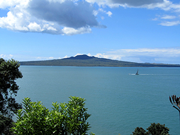
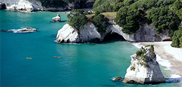
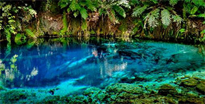
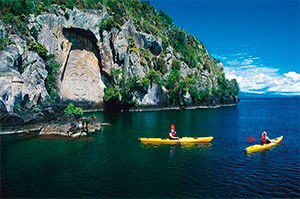
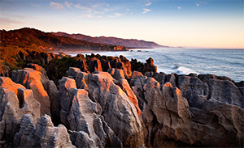
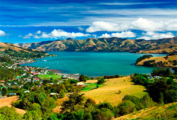
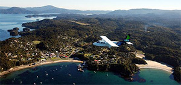

Attractions
New Zealand has so many beautiful places, it is difficult to narrow down to just a few! Here are just some of the remarkable places to visit in New Zealand.
Rangitoto Island
An iconic backdrop of Auckland city, Rangitoto is a volcanic island, the youngest volcano in New Zealand. It emerged from the sea 600 years ago. It is a pest-free island also home to the world's largest pohutukawa forest. The popular summit track on the island allows visitors a panoramic view of Auckland and the Hauraki Gulf 259 metres above sea-level.
Cathedral Cove
Cathedral Cove is a beautiful little bay on the Coromandel Peninsula, 10 minutes drive from another famous spot, Hot Water Beach. It was featured in the backdrop of a scene in the movie The Chronicles of Narnia. It can only be accessed by the walking track from Hahei, kayak or boat.
Blue Spring
The crystal clear water of this spring is so pure it is bottled by Pump, in fact it supplies around 70% of New Zealand's bottled water. The clear water relfects the sky so beautifully it looks blue, it's a popular tourist spot for good reason! One can enjoy the tranquil sight of this spring by walking along the Te Waihou walkway near Putaruru.
Lake Taupo
The largest lake in New Zealand - also the biggest volcanic crater in the world, created by a volcanic eruption that occurred around 26,500 years ago. It has erupted an average of once every thousand years and is considered dormant rather than extinct. The Waikato river (the longest river in New Zealand) flows through it and goes all the way up to Port Waikato south of Auckland where it empties into the Tasman sea.
Pancake Rocks
These bizarre-looking limestone formations were formed slowly over 30 million years ago from the tiny fragments of dead marine creatures and plants. Sculpted by the rain, wind and seawater into the otherworldly shapes they are today. Looking out over the sea, they look particularly spectacular at high tide in a westerly sea. They are located in Punakaiki just a 20 minute walk from the highway.
Akaroa
75km south of Christchurch nestled in a scenic bay at the base of an ancient volcano (like many places in New Zealand), originally settled by the French and British, Akaroa retains it's quaint colonial influence with French street signs and French-style cafes and restaurants. The harbour is also home to the rare Hector's dolphin, one of the smallest dolphins in the world.
Milford Sound

This fjord has spectucular rainforests, waterfalls and towering peaks, Milford Sound is truly a wonderous sight. It was carved by glaciers during the ice ages. To experience it there are boat cruises day or overnight, kayaking, diving and scenic flights. There are also plenty of hikes and treks to enjoy. It is located about 4 hours drive from Queenstown.
Stewart Island
The often overlooked third largest island that makes up New Zealand, with only around 300 residents it is a peaceful place to visit. The Rakiura National Park makes up about 85% of the island's area. There is plenty to do, wildlife to see, walking, fishing, diving and kayaking among the many activities. It can be visited by ferry from Bluff or plane from Invercargill airport.